الباب 10: اللوحات الإضافية الملحقة بالإشارات المرورية
الدليل الهندسي والتشريعي الكامل للوحات المكملة والمفسرة لإشارات المرور: التمييز القاطع بين لوحات المسافة (Distanza) ولوحات الامتداد (Estesa)، شروط السريان بالأيام وساعات الدوام (Lavorativi بالمطرقتين و Festivi بالصليبين)، تخصيص الإشارات لفئات معينة واستثناء فئات أخرى (Eccetto)، خرائط أسبقية التقاطعات ومسار الطريق الرئيسي، وحالات الطقس والجليد والمطر وسحب المركبات بالرافعة.
🎮 محاكي الفرق الحاسم: لوحة المسافة مقابل لوحة الامتداد
تعلم كيف تميز فورياً بنظرة واحدة بين موعد بداية الخطر وبين المسافة التي يمتد عليها

القاعدة الهندسية: وجود رقم مجرد بالأمتار أو الكيلومترات دون أي أسهم يعني المسافة التي تفصل بين مكان وضع الإشارة ونقطة بداية الخطر أو سريان المنع. الطريق حالياً آمن والمنع يبدأ بعد قطع المسافة المكتوبة.
🎮 محاكي أيام وساعات السريان (Festivi vs Lavorativi)
بدّل بين رموز الأيام لمعرفة متى يسري منع الوقوف أو حظر المرور ومتى يكون مسموحاً

الحكم القانوني: رمز المطرقتين المتقاطعتين يعني سريان الإشارة حصراً في أيام العمل الرسمية (Giorni Lavorativi) خلال الساعات المحددة، ويكون الركن أو المرور مسموحاً في أيام الآحاد والعطلات الرسمية.
🎮 محاكي خريطة أسبقية مسارات التقاطع (Andamento Strada)
اكتشف من يملك حق الأسبقية المطلقة عند انحناء مسار الطريق الرئيسي في التقاطعات
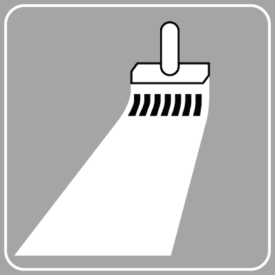
القاعدة الذهبية للتقاطع: الخط الأسود العريض يمثل مسار الطريق ذي الأسبقية (Strada principale). من يسير عليه يملك حق الأسبقية في العبور، بينما الخطوط الرفيعة تمثل طرقاً ثانوية ملزمة بالتوقف وإعطاء الأسبقية.
🔍 مصفوفة المقارنة البصرية: فك تشابهات اللوحات الإضافية المربكة
أهم 4 مقارنات ثنائية يقع فيها أغلب الطلاب في اختبارات رخصة القيادة الإيطالية
لوحة المسافة (Distanza)
العلامة: رقم مجرد بدون أي أسهم.
المعنى: الخطر يبدأ بعد قطع هذه المسافة من موضع الإشارة.

لوحة الامتداد (Estesa)
العلامة: رقم محصور بين سهمين رأسيين.
المعنى: الخطر يبدأ فوراً ويمتد متواصلاً على طول المسافة المكتوبة.
أيام العمل (Feriali)
الرمز: مطرقتان متقاطعتان.
السريان: يسري من الاثنين إلى السبت فقط، ولا يسري في الآحاد والعطلات الرسمية.

أيام العطل (Festivi)
الرمز: صليبان لاتينيان.
السريان: يسري حصراً في أيام الآحاد والأعياد الدينية والوطنية الرسمية.
لوحة المسافة (موديل 1)
Pannello integrativo di distanza (Modello 1 - Fig. 121)لوحة بيضاء مستطيلة بها رقم بالأمتار أو الكيلومترات دون أي أسهم؛ تحدد المسافة المتبقية بين مكان وجود الإشارة ونقطة بداية الخطر أو بداية سريان الإلزام أو المنع (مثلاً: الخطر يبدأ بعد 3.8 كم).
- • Il pannello integrativo raffigurato, posto sotto un segnale di pericolo, indica la distanza tra il segnale ed il punto d'inizio del pericolo
Il pannello integrativo raffigurato, posto sotto un segnale di pericolo, indica la distanza tra il segnale ed il punto d'inizio del pericolo - • Il pannello integrativo raffigurato può essere posto sotto i segnali per completarne il significato
Il pannello integrativo raffigurato può essere posto sotto i segnali per completarne il significato - • Il pannello integrativo raffigurato, posto sotto un segnale di indicazione, serve a precisare la distanza che manca per raggiungere il punto indicato dal segnale
Il pannello integrativo raffigurato, posto sotto un segnale di indicazione, serve a precisare la distanza che manca per raggiungere il punto indicato dal segnale - • Il pannello integrativo raffigurato, posto sotto un segnale di obbligo o divieto, indica la distanza dalla quale inizia la prescrizione
Il pannello integrativo raffigurato, posto sotto un segnale di obbligo o divieto, indica la distanza dalla quale inizia la prescrizione
- • Il pannello integrativo mostrato in figura A indica i metri di strada già fatta (خطأ FALSO)
- • Il pannello integrativo raffigurato indica la pendenza di una strada (خطأ FALSO)
- • Il pannello integrativo mostrato in figura A indica la distanza di sicurezza da mantenere dal veicolo che sta davanti (خطأ FALSO)
- • Il pannello integrativo raffigurato indica la larghezza di una strada (خطأ FALSO)
لوحة الامتداد والطول (موديل 2)
Pannello integrativo di estesa (Modello 2 - Fig. 122)لوحة تحمل رقماً محصوراً بين سهمين رأسيين جانبيين (↑ 3.8 km ↑)؛ تعلن أن الخطر أو المنع يبدأ فوراً عند الإشارة ويمتد متواصلاً على طول المسافة المكتوبة (مثلاً: منعطفات متتالية تمتد بطول 3.8 كم).
- • Il pannello integrativo raffigurato, posto sotto un segnale di pericolo, indica la lunghezza del tratto di strada pericoloso
Il pannello integrativo raffigurato, posto sotto un segnale di pericolo, indica la lunghezza del tratto di strada pericoloso - • Il pannello integrativo raffigurato, posto sotto un segnale di obbligo, indica la lunghezza del tratto stradale nel quale vale la prescrizione del segnale
Il pannello integrativo raffigurato, posto sotto un segnale di obbligo, indica la lunghezza del tratto stradale nel quale vale la prescrizione del segnale - • Il pannello integrativo raffigurato può essere posto sotto un segnale di divieto
Il pannello integrativo raffigurato può essere posto sotto un segnale di divieto - • Il pannello integrativo raffigurato in figura B, posto sotto ad un segnale di pericolo, indica, in chilometri, la lunghezza del tratto di strada pericoloso
Il pannello integrativo raffigurato in figura B, posto sotto ad un segnale di pericolo, indica, in chilometri, la lunghezza del tratto di strada pericoloso
- • Il pannello integrativo rappresentato in figura A obbliga a proseguire diritto per 380 metri (خطأ FALSO)
- • Il pannello integrativo rappresentato in figura A indica la distanza di sicurezza da mantenere in caso di pioggia (خطأ FALSO)
- • Il pannello integrativo raffigurato indica la distanza tra il segnale e il punto d'inizio del pericolo (خطأ FALSO)
- • Il segnale raffigurato indica la distanza tra il segnale e l'inizio della strada in cattivo stato (خطأ FALSO)
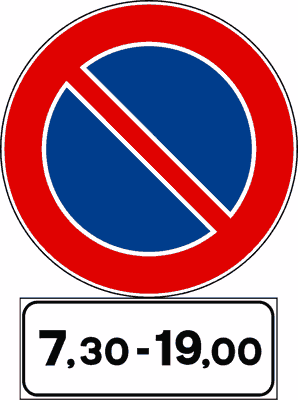
لوحة الفترات والساعات اليومية
Pannello integrativo fascia oraria (Fig. 123)تحدد الساعات التي يسري خلالها حكم الإشارة (مثل 8.00 - 20.00) طوال أيام الأسبوع بدون استثناء لأي يوم، ويكون التصرف حراً خارج تلك الساعات.
- • Il segnale raffigurato vieta la sosta dalle ore 7.30 alle ore 19.00
Il segnale raffigurato vieta la sosta dalle ore 7.30 alle ore 19.00 - • Il segnale raffigurato vieta il transito dalle ore 7.30 alle 19.00
Il segnale raffigurato vieta il transito dalle ore 7.30 alle 19.00 - • Il pannello integrativo (A), posto sotto il segnale (B), vieta il transito ai pedoni nelle sole ore indicate
Il pannello integrativo (A), posto sotto il segnale (B), vieta il transito ai pedoni nelle sole ore indicate - • Il pannello integrativo rappresentato in figura B indica le ore di tutti i giorni nelle quali vale il segnale
Il pannello integrativo rappresentato in figura B indica le ore di tutti i giorni nelle quali vale il segnale
- • Il segnale raffigurato consente il transito ai motocicli nelle sole ore indicate (خطأ FALSO)
- • Il segnale raffigurato indica che il clacson può essere usato dalle ore 7.30 alle ore 19.00 (خطأ FALSO)
- • Il segnale raffigurato indica l’orario di apertura di una zona a traffico limitato (خطأ FALSO)
- • Il pannello integrativo rappresentato in figura B indica in quali ore si può circolare a fari spenti (خطأ FALSO)
لوحة سريان أيام العطلات والأعياد
Fascia oraria giorni festivi (Fig. 124)تحمل رمز صليبين متجاورين إلى جانب التوقيت؛ تدل على أن حكم الإشارة (مثل منع الوقوف أو حظر المرور) يسري حصراً في أيام الآحاد والعطلات الرسمية (Giorni Festivi).
- • Il pannello integrativo raffigurato limita la validità del segnale sotto cui è posto ai giorni festivi e alla fascia oraria indicata
Il pannello integrativo raffigurato limita la validità del segnale sotto cui è posto ai giorni festivi e alla fascia oraria indicata - • Il pannello integrativo raffigurato, posto sotto un segnale di prescrizione, precisa che il segnale vale solo nei giorni festivi e nelle fasce orarie indicate
Il pannello integrativo raffigurato, posto sotto un segnale di prescrizione, precisa che il segnale vale solo nei giorni festivi e nelle fasce orarie indicate - • Il segnale raffigurato consente il transito nei giorni festivi e nelle fasce orarie indicate ai soli pedoni
Il segnale raffigurato consente il transito nei giorni festivi e nelle fasce orarie indicate ai soli pedoni - • Il segnale raffigurato vieta la sosta nella fascia oraria indicata, dei giorni festivi
Il segnale raffigurato vieta la sosta nella fascia oraria indicata, dei giorni festivi
- • Il pannello integrativo raffigurato indica l'orario d'ingresso nel cimitero (خطأ FALSO)
- • Il pannello integrativo raffigurato indica l'orario di apertura delle chiese (خطأ FALSO)
- • Il pannello integrativo raffigurato indica l'orario di celebrazione delle funzioni religiose (خطأ FALSO)
- • Il segnale raffigurato indica che si può parcheggiare tutti i giorni nella fascia oraria indicata (خطأ FALSO)
لوحة سريان أيام العمل والدوام
Fascia oraria giorni lavorativi (Fig. 125)تحمل رمز مطرقتين متقاطعتين إلى جانب التوقيت؛ تدل على أن الإشارة تسري حصراً في أيام العمل الرسمية من الاثنين إلى السبت (Giorni Lavorativi/Feriali)، ولا تسري في أيام الآحاد والعطلات.
- • Il pannello integrativo raffigurato, posto sotto un segnale, ne limita la validità nei giorni lavorativi e alle fasce orarie indicate
Il pannello integrativo raffigurato, posto sotto un segnale, ne limita la validità nei giorni lavorativi e alle fasce orarie indicate - • Il segnale raffigurato vieta il transito nella fascia oraria indicata, dei giorni lavorativi
Il segnale raffigurato vieta il transito nella fascia oraria indicata, dei giorni lavorativi - • Il pannello integrativo raffigurato indica la fascia oraria dei giorni lavorativi durante la quale vale la prescrizione del segnale sotto cui è posto
Il pannello integrativo raffigurato indica la fascia oraria dei giorni lavorativi durante la quale vale la prescrizione del segnale sotto cui è posto - • Il segnale raffigurato vieta la sosta nella fascia oraria indicata dei giorni lavorativi
Il segnale raffigurato vieta la sosta nella fascia oraria indicata dei giorni lavorativi
- • Il pannello integrativo raffigurato indica che il segnale al quale è abbinato vale tutti i giorni, ma solo nelle ore indicate (خطأ FALSO)
- • Il pannello integrativo raffigurato indica gli orari di apertura di un museo di attrezzi da lavoro (خطأ FALSO)
- • Il pannello integrativo raffigurato indica la fascia oraria di apertura delle officine di soccorso stradale (خطأ FALSO)
- • Il segnale raffigurato è riservato ai veicoli per il soccorso stradale (خطأ FALSO)

لوحة بداية سريان الإلزام أو الحظر
Pannello inizio prescrizione (Fig. 128)لوحة بسهم يشير لأعلى (Inizio) أو كلمة Inizio؛ توضع أسفل إشارات المنع أو الوقوف لتعلن النقطة الدقيقة التي يبدأ منها سريان الحظر باتجاه السير للأمام.
- • Il pannello integrativo (A), posto sotto un segnale di divieto, evidenzia il punto d'inizio della prescrizione
Il pannello integrativo (A), posto sotto un segnale di divieto, evidenzia il punto d'inizio della prescrizione - • Il segnale raffigurato indica che il divieto di sosta ha inizio in quel punto
Il segnale raffigurato indica che il divieto di sosta ha inizio in quel punto - • Il segnale raffigurato evidenzia l'inizio dell'area dove è possibile parcheggiare
Il segnale raffigurato evidenzia l'inizio dell'area dove è possibile parcheggiare - • il segnale raffigurato evidenzia il punto d'inizio del divieto di fermata
il segnale raffigurato evidenzia il punto d'inizio del divieto di fermata
- • Il pannello raffigurato (A) indica una strada in salita (خطأ FALSO)
- • Il pannello raffigurato (A) indica l'obbligo di proseguire diritto (خطأ FALSO)
- • Il pannello raffigurato (A) indica la fine di una strada a senso unico (خطأ FALSO)
- • Il pannello raffigurato (B) indica la corsia riservata agli autobus urbani (خطأ FALSO)
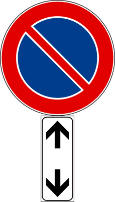
لوحة استمرار سريان الإلزام أو الحظر
Pannello continuazione prescrizione (Fig. 129)لوحة بسهمين متقابلين متعاكسين (أعلى وأسفل) أو كلمة Continua؛ توضع لتأكيد أن الحظر أو المنع ما زال سارياً ومستمراً قبل وبعد موضع الإشارة.
- • Il segnale raffigurato indica che il divieto di sosta continua
Il segnale raffigurato indica che il divieto di sosta continua - • Il segnale raffigurato conferma la continuazione del divieto di sorpasso
Il segnale raffigurato conferma la continuazione del divieto di sorpasso - • Il segnale raffigurato indica la continuazione del limite massimo di velocità
Il segnale raffigurato indica la continuazione del limite massimo di velocità - • Il segnale raffigurato indica la continuazione del tratto di strada sdrucciolevole
Il segnale raffigurato indica la continuazione del tratto di strada sdrucciolevole
- • Il pannello integrativo raffigurato (A) indica di tornare indietro (خطأ FALSO)
- • Il segnale raffigurato indica la fine della zona destinata al parcheggio (خطأ FALSO)
- • Il pannello integrativo raffigurato (A) indica un senso unico alternato (خطأ FALSO)
- • Il pannello integrativo raffigurato (A), posto sotto un segnale di pericolo, ne indica la fine (خطأ FALSO)
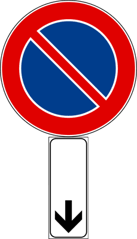
لوحة نهاية سريان الإلزام أو الحظر
Pannello fine prescrizione (Fig. 130)لوحة بسهم يشير لأسفل (Fine) أو كلمة Fine؛ تعلن النقطة الدقيقة التي ينتهي عندها مفعول الحظر أو منع الوقوف والعودة للقواعد العامة.
- • Il segnale raffigurato indica il punto nel quale termina il divieto di sosta
Il segnale raffigurato indica il punto nel quale termina il divieto di sosta - • Il segnale raffigurato indica il punto dove termina il divieto di fermata
Il segnale raffigurato indica il punto dove termina il divieto di fermata - • Il segnale raffigurato indica la fine del cantiere stradale
Il segnale raffigurato indica la fine del cantiere stradale - • Il segnale raffigurato indica la fine dell'area destinata al parcheggio
Il segnale raffigurato indica la fine dell'area destinata al parcheggio
- • Il pannello integrativo raffigurato (A) indica una strada in discesa (خطأ FALSO)
- • Il pannello integrativo raffigurato (B), posto sotto il segnale PARCHEGGIO, indica l'inizio della zona destinata al parcheggio (خطأ FALSO)
- • Il pannello integrativo raffigurato (A), posto sotto un segnale di divieto, indica l'inizio del divieto (خطأ FALSO)
- • Il pannello integrativo raffigurato (A) indica una strada chiusa al traffico (خطأ FALSO)
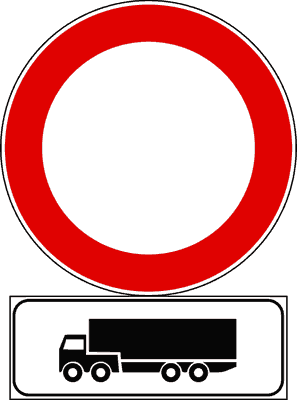
لوحات تخصيص وسريان الفئات
Limitazione a specifiche categorie di veicoli (Fig. 127)تحمل رمز فئة معينة من المركبات (مثل الشاحنات، الحافلات، السيارات، أو ذوي الإعاقة) لتقصر مفعول الإشارة حصراً على الفئة المرسومة دون غيرها من المركبات.
- • Il segnale raffigurato vieta il transito ai soli veicoli indicati
Il segnale raffigurato vieta il transito ai soli veicoli indicati - • Il segnale raffigurato vieta la sosta ai veicoli indicati
Il segnale raffigurato vieta la sosta ai veicoli indicati - • Il segnale raffigurato vieta la sosta agli autoarticolati
Il segnale raffigurato vieta la sosta agli autoarticolati - • Il pannello integrativo raffigurato indica che il segnale al quale è abbinato vale solo per i veicoli rappresentati
Il pannello integrativo raffigurato indica che il segnale al quale è abbinato vale solo per i veicoli rappresentati
- • Il pannello integrativo raffigurato indica un'officina meccanica per autotreni (خطأ FALSO)
- • Il pannello integrativo raffigurato indica una stazione di rifornimento per soli mezzi pesanti (خطأ FALSO)
- • Il segnale raffigurato consente la sosta agli autoarticolati (خطأ FALSO)
- • Il segnale raffigurato prescrive che possono transitare gli autoarticolati (خطأ FALSO)
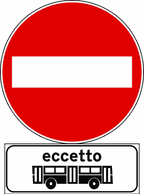
لوحات الاستثناء (Eccetto)
Pannelli integrativi di eccezione (Eccetto)تحمل كلمة (Eccetto) مع رمز الفئة؛ تعني أن الإشارة تلزم أو تمنع جميع مستخدمي الطريق باستثناء الفئة المذكورة (مثل: ممنوع الدخول ما عدا الحافلات Eccetto Autobus).
- • Il segnale in figura consente l'accesso solo agli autobus
Il segnale in figura consente l'accesso solo agli autobus - • Il segnale in figura permette di transitare solo agli autobus
Il segnale in figura permette di transitare solo agli autobus - • Il segnale in figura indica che possono parcheggiare tutti i veicoli tranne gli autobus
Il segnale in figura indica che possono parcheggiare tutti i veicoli tranne gli autobus - • Il pannello integrativo in figura può essere abbinato ad un segnale di obbligo
Il pannello integrativo in figura può essere abbinato ad un segnale di obbligo
- • Il segnale in figura vieta l'accesso agli autobus (خطأ FALSO)
- • Il segnale in figura vieta il transito agli autobus (خطأ FALSO)
- • Il pannello integrativo in figura può trovarsi da solo (خطأ FALSO)
- • Il pannello integrativo in figura vale solo per gli autobus urbani (خطأ FALSO)
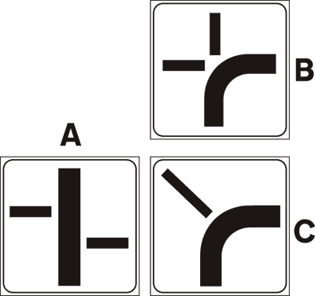
خريطة مسارات وأسبقية التقاطع
Andamento della strada principale (Fig. 131-135)لوحة توضح المخطط الهندسي للتقاطع: الخط العريض الأسود يمثل مسار الطريق ذي الأسبقية (Strada principale)، بينما الخطوط الرفيعة تمثل الطرق الفرعية الملزمة بإعطاء الأسبقية.
- • I pannelli integrativi in figura vengono posti sotto i segnali di diritto di precedenza
I pannelli integrativi in figura vengono posti sotto i segnali di diritto di precedenza - • I pannelli integrativi in figura indicano una intersezione, distinguendo la strada principale dalle strade secondarie
I pannelli integrativi in figura indicano una intersezione, distinguendo la strada principale dalle strade secondarie - • I pannelli integrativi in figura posti in vicinanza di una intersezione, indicano l'andamento della strada principale
I pannelli integrativi in figura posti in vicinanza di una intersezione, indicano l'andamento della strada principale - • I pannelli integrativi in figura possono trovarsi sotto il segnale INTERSEZIONE CON DIRITTO DI PRECEDENZA
I pannelli integrativi in figura possono trovarsi sotto il segnale INTERSEZIONE CON DIRITTO DI PRECEDENZA
- • I pannelli in figura (B) e (C) indicano una curva pericolosa (خطأ FALSO)
- • I pannelli integrativi in figura indicano come lasciare il veicolo in sosta (خطأ FALSO)
- • I pannelli integrativi in figura vengono posti anche sulle autostrade (خطأ FALSO)
- • I pannelli integrativi in figura indicano strade senza uscita (خطأ FALSO)
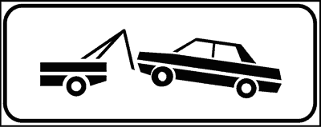
منطقة سحب المركبات بالرافعة
Zona rimozione coatta e carrorottrice (Fig. 136)لوحة برسم رافعة تسحب سيارة؛ توضع أسفل إشارة منع الوقوف (Divieto di sosta) لتنذر بأن الوقوف المخالف يعرض المركبة للقطر والسحب الإجباري الفوري إلى الحجز وحساب الغرامات على المالك.
- • Il pannello integrativo raffigurato indica che il veicolo lasciato in sosta può essere portato via dal carro-attrezzi
Il pannello integrativo raffigurato indica che il veicolo lasciato in sosta può essere portato via dal carro-attrezzi - • Il segnale raffigurato indica che il veicolo può essere spostato in una depositeria comunale
Il segnale raffigurato indica che il veicolo può essere spostato in una depositeria comunale - • In presenza del segnale raffigurato i veicoli al servizio di persone diversamente abili, muniti di apposito contrassegno, non possono essere portati nella depositeria comunale, né bloccati con le ganasce
In presenza del segnale raffigurato i veicoli al servizio di persone diversamente abili, muniti di apposito contrassegno, non possono essere portati nella depositeria comunale, né bloccati con le ganasce - • Il pannello integrativo raffigurato indica una zona di divieto di sosta con rimozione del veicolo
Il pannello integrativo raffigurato indica una zona di divieto di sosta con rimozione del veicolo
- • Il pannello integrativo raffigurato indica la presenza di officine attrezzate per il soccorso stradale (خطأ FALSO)
- • Il pannello integrativo raffigurato indica l'imbarco delle autovetture sui treni merce (خطأ FALSO)
- • Il pannello integrativo raffigurato indica un'officina meccanica attrezzata per il cambio d'olio (خطأ FALSO)
- • Il pannello integrativo raffigurato indica che possono sostare i veicoli per il soccorso stradale (خطأ FALSO)
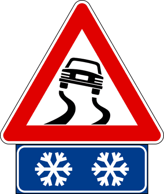
لوحة خطر تكون الجليد والصقيع
Pericolo di ghiaccio o formazione di ghiaccio (Fig. 138)لوحة بيضاء برمز بلورة ثلجية؛ توضع أسفل إشارات الخطر لتحذر من أن الطريق معرض لتكون طبقات جليدية غير مرئية (Ghiaccio) خاصة في الجسور والأنفاق والمناطق المظللة والباردة.
- • Il segnale raffigurato indica la possibilità di trovare un tratto di strada sdrucciolevole a causa di ghiaccio
Il segnale raffigurato indica la possibilità di trovare un tratto di strada sdrucciolevole a causa di ghiaccio - • Il pannello integrativo raffigurato indica la possibilità di trovare tratti di strada ghiacciati
Il pannello integrativo raffigurato indica la possibilità di trovare tratti di strada ghiacciati - • Il pannello integrativo raffigurato indica, in caso di bassa temperatura, la presenza di tratti pericolosi per ghiaccio
Il pannello integrativo raffigurato indica, in caso di bassa temperatura, la presenza di tratti pericolosi per ghiaccio - • Il pannello integrativo raffigurato indica, su strade coperte di neve, il pericolo di formazione di ghiaccio
Il pannello integrativo raffigurato indica, su strade coperte di neve, il pericolo di formazione di ghiaccio
- • Il pannello integrativo raffigurato indica la presenza nelle vicinanze di impianti di risalita (خطأ FALSO)
- • Il pannello integrativo raffigurato indica la strada da prendere per raggiungere le alpi (خطأ FALSO)
- • Il pannello integrativo raffigurato indica la presenza nelle vicinanze di una stazione sciistica (خطأ FALSO)
- • Il pannello integrativo raffigurato invita ad usare le luci di emergenza durante la sosta (خطأ FALSO)
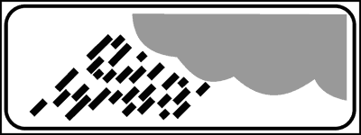
لوحة خطر الانزلاق عند هطول المطر
Pericolo di scivolamento per pioggia (Fig. 137)لوحة برسم سحابة تمطر وقطرات ماء متساقطة؛ تحذر من أن سطح الطريق يصبح شديد الانزلاق ويفقد التماسك عند هطول الأمطار، وتلزم بزيادة مسافة الأمان وتخفيض السرعة.
- • Il pannello integrativo raffigurato indica un tratto di strada pericoloso in caso di pioggia
Il pannello integrativo raffigurato indica un tratto di strada pericoloso in caso di pioggia - • Il pannello integrativo raffigurato invita, in caso di pioggia, ad aumentare la distanza di sicurezza
Il pannello integrativo raffigurato invita, in caso di pioggia, ad aumentare la distanza di sicurezza - • Il pannello integrativo raffigurato indica che quando piove la strada può diventare sdrucciolevole
Il pannello integrativo raffigurato indica che quando piove la strada può diventare sdrucciolevole - • Il pannello integrativo raffigurato indica che in caso di pioggia si può trovare del fango sulla strada
Il pannello integrativo raffigurato indica che in caso di pioggia si può trovare del fango sulla strada
- • Il pannello integrativo raffigurato indica un autolavaggio nelle vicinanze (خطأ FALSO)
- • Il pannello integrativo raffigurato indica la presenza di una stazione meteorologica nelle vicinanze (خطأ FALSO)
- • Il pannello integrativo raffigurato indica di fare attenzione agli autocarri in transito, per la possibile perdita del carico trasportato (خطأ FALSO)
- • Il pannello integrativo raffigurato indica un tratto di strada con probabile formazione di nuvole di polvere (خطأ FALSO)
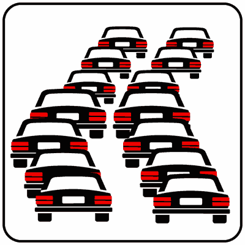
لوحة خطر ازدحام وطوابير المركبات
Pericolo di code o rallentamento del traffico (Fig. 140)لوحة برسم سيارات متتالية تقترب من بعضها؛ تنبه لاحتمال مفاجئ بوجود طوابير سيارات متوقفة أو بطيئة بسبب اختناق مروري أو حوادث أو ورش عمل وتلزم بتخفيف السرعة مبكراً.
- • Il pannello integrativo raffigurato indica la possibilità di trovare traffico intenso, con formazione di colonne di veicoli
Il pannello integrativo raffigurato indica la possibilità di trovare traffico intenso, con formazione di colonne di veicoli - • Il pannello integrativo raffigurato indica la possibilità di trovare veicoli fermi in colonna
Il pannello integrativo raffigurato indica la possibilità di trovare veicoli fermi in colonna - • Il pannello integrativo raffigurato si può trovare all'ingresso delle autostrade, per indicare che vi sono veicoli in lento movimento
Il pannello integrativo raffigurato si può trovare all'ingresso delle autostrade, per indicare che vi sono veicoli in lento movimento - • Il pannello integrativo raffigurato invita ad usare prudenza, per non tamponare veicoli fermi per intasamento del traffico
Il pannello integrativo raffigurato invita ad usare prudenza, per non tamponare veicoli fermi per intasamento del traffico
- • Il pannello raffigurato indica un'area di parcheggio per autovetture (خطأ FALSO)
- • Il pannello integrativo raffigurato indica che la corsia di sinistra è riservata ai veicoli che pagano il pedaggio autostradale tramite telepass (خطأ FALSO)
- • Il pannello integrativo raffigurato indica una strada a senso unico (خطأ FALSO)
- • Il pannello integrativo raffigurato indica l'obbligo di sorpassare a sinistra (خطأ FALSO)
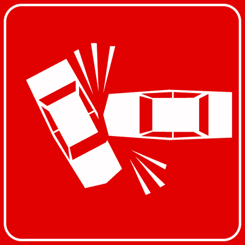
لوحة حادث مروري يعرقل السير
Incidente stradale con intralcio (Fig. 139)لوحة برسم سيارتين متصادمتين؛ تحذر من وجود حادث سير أمامك يشغل جزءاً من نهر الطريق، وتلزم بالحذر الشديد وتفسيح المجال لمركبات الإسعاف والإنقاذ والشرطة.
- • Il pannello integrativo raffigurato invita a rallentare a causa di un incidente
Il pannello integrativo raffigurato invita a rallentare a causa di un incidente - • Il pannello integrativo raffigurato indica veicoli incidentati sulla carreggiata
Il pannello integrativo raffigurato indica veicoli incidentati sulla carreggiata - • Il pannello integrativo raffigurato segnala che la carreggiata è occupata da veicoli incidentati
Il pannello integrativo raffigurato segnala che la carreggiata è occupata da veicoli incidentati - • Il pannello integrativo raffigurato segnala un incidente stradale e che quindi occorre diminuire la velocità
Il pannello integrativo raffigurato segnala un incidente stradale e che quindi occorre diminuire la velocità
- • Il pannello integrativo raffigurato indica una strada sdrucciolevole (خطأ FALSO)
- • Il pannello integrativo raffigurato indica di fermarsi e dare la precedenza a destra (خطأ FALSO)
- • Il pannello integrativo raffigurato si trova solo se l'incidente è avvenuto in autostrada (خطأ FALSO)
- • Il pannello integrativo raffigurato indica un divieto di sosta (خطأ FALSO)
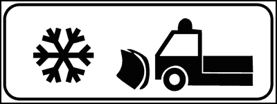
لوحة آليات وكاسحات إزالة الثلوج
Presenza di macchine sgombraneve al lavoro (Fig. 141)لوحة برسم شاحنة كاسحة ثلوج؛ تحذر من وجود آليات تنظيف وإزالة الثلوج تعمل على الطريق، وتلزم بالحفاظ على مسافة أمان لا تقل عن 20 متراً خلفها في الطرق العادية و 100 متر في الأوتوستراد.
- • Il pannello integrativo raffigurato indica la presenza di macchine sgombraneve al lavoro sulla strada
Il pannello integrativo raffigurato indica la presenza di macchine sgombraneve al lavoro sulla strada - • Il pannello integrativo raffigurato è abbinato al segnale ALTRI PERICOLI
Il pannello integrativo raffigurato è abbinato al segnale ALTRI PERICOLI - • Il pannello integrativo raffigurato invita a diminuire la velocità per la presenza di macchine sgombraneve in funzione
Il pannello integrativo raffigurato invita a diminuire la velocità per la presenza di macchine sgombraneve in funzione - • Il pannello integrativo raffigurato invita a mantenere una distanza di almeno 20 metri dalle macchine sgombraneve in funzione
Il pannello integrativo raffigurato invita a mantenere una distanza di almeno 20 metri dalle macchine sgombraneve in funzione
- • Il pannello integrativo raffigurato indica la costruzione di un parco giochi nelle vicinanze (خطأ FALSO)
- • Il pannello integrativo raffigurato indica il divieto di transito alle macchine sgombraneve (خطأ FALSO)
- • Il pannello integrativo raffigurato indica l'obbligo di montare le catene (خطأ FALSO)
- • Il pannello integrativo raffigurato obbliga a stare distanti 100 metri dallo sgombraneve in funzione (خطأ FALSO)

لوحة خروج ودخول آليات ورش العمل
Uscita o entrata autocarri e mezzi di lavoro (Fig. 142)لوحة برسم شاحنة قلاب تفرغ حمولتها؛ تنبه لاحتمال خروج أو مناورة آليات ورش عمل بطيئة محملة بالأتربة أو الحصى، مع احتمال وجود طين أو بقايا حفر على نهر الطريق.
- • Il pannello integrativo raffigurato indica la possibile presenza di macchine operatrici in movimento
Il pannello integrativo raffigurato indica la possibile presenza di macchine operatrici in movimento - • Il pannello integrativo raffigurato indica che sulla corsia possono esserci pale meccaniche al lavoro
Il pannello integrativo raffigurato indica che sulla corsia possono esserci pale meccaniche al lavoro - • Il pannello integrativo raffigurato indica che sulla strada possono esserci escavatori in movimento
Il pannello integrativo raffigurato indica che sulla strada possono esserci escavatori in movimento - • Il pannello integrativo raffigurato invita ad usare particolare prudenza per la presenza di pale meccaniche in movimento
Il pannello integrativo raffigurato invita ad usare particolare prudenza per la presenza di pale meccaniche in movimento
- • Il pannello integrativo raffigurato indica la presenza di veicoli militari (خطأ FALSO)
- • Il pannello integrativo raffigurato indica un'area per lo scarico della spazzatura (خطأ FALSO)
- • Il pannello integrativo raffigurato si trova prima di un ponte, per vietare il transito alle macchine operatrici (خطأ FALSO)
- • Il pannello integrativo raffigurato indica una strada riservata alle sole macchine operatrici (خطأ FALSO)

لوحة بطء الشاحنات في المرتفعات
Corsia per autocarri lenti in salita (Fig. 143)لوحة برسم شاحنة تصعد منحدراً؛ تنبه السائقين إلى أن الشاحنات الثقيلة تسير ببطء شديد في المرتفعات القادمة، وتدعو لعدم التجاوز الخطر وحفظ مسافة أمان مناسبة.
- • Il pannello integrativo raffigurato indica un tratto di strada in salita con probabile presenza di autocarri che marciano a bassa velocità
Il pannello integrativo raffigurato indica un tratto di strada in salita con probabile presenza di autocarri che marciano a bassa velocità - • Il pannello integrativo raffigurato indica un tratto di strada in ripida salita che costringe gli autocarri a rallentare
Il pannello integrativo raffigurato indica un tratto di strada in ripida salita che costringe gli autocarri a rallentare - • Il pannello integrativo raffigurato indica di fare attenzione per la probabile presenza di veicoli pesanti in lento movimento
Il pannello integrativo raffigurato indica di fare attenzione per la probabile presenza di veicoli pesanti in lento movimento - • In presenza del segnale raffigurato il conducente deve moderare la velocità per la possibile presenza di autocarri in lento movimento
In presenza del segnale raffigurato il conducente deve moderare la velocità per la possibile presenza di autocarri in lento movimento
- • Il pannello integrativo raffigurato indica un tratto di strada chiuso a causa di un tamponamento (خطأ FALSO)
- • Il pannello integrativo raffigurato indica che è vietato sorpassare gli autocarri (خطأ FALSO)
- • Il pannello integrativo raffigurato si trova nei pontili d'imbarco delle navi traghetto (خطأ FALSO)
- • Il pannello integrativo raffigurato indica di diminuire la distanza di sicurezza (خطأ FALSO)
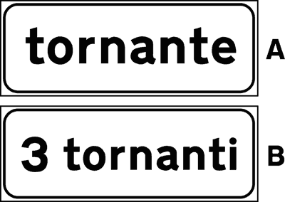
لوحة عدد وترقيم المنعطفات الجبلية
Serie di tornanti e numero progressivo (Fig. 144)لوحة برسم منعطف حاد ومكتوب بها رقم؛ تشير إلى رقم المنعطف الحاد التتابعي (Tornante) أو عدد المنعطفات الحادة المتتالية في الطرق الجبلية الملتوية.
- • Il pannello integrativo in figura (A) indica la vicinanza di una o più curve strette
Il pannello integrativo in figura (A) indica la vicinanza di una o più curve strette - • Il pannello integrativo in figura (B) indica la vicinanza di una o più curve particolarmente pericolose
Il pannello integrativo in figura (B) indica la vicinanza di una o più curve particolarmente pericolose - • Il pannello integrativo in figura (A) può indicare uno o più tornanti
Il pannello integrativo in figura (A) può indicare uno o più tornanti - • Il pannello integrativo in figura (B) si può trovare sotto il segnale di CURVA o DOPPIA CURVA
Il pannello integrativo in figura (B) si può trovare sotto il segnale di CURVA o DOPPIA CURVA
- • Il pannello integrativo di figura B indica il numero di corsie di cui è composta la strada (خطأ FALSO)
- • Il pannello integrativo di figura B indica quanti veicoli contemporaneamente possono percorrere la curva (خطأ FALSO)
- • Il pannello integrativo di figura B indica quanti chilometri mancano per poter trovare un cavalcavia che consente di invertire il senso di marcia (خطأ FALSO)
- • Il pannello integrativo di figura B indica il numero degli svincoli autostradali (خطأ FALSO)
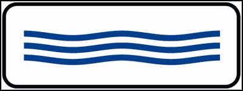
لوحة خطر فيضان وغمر المياه
Pericolo di allagamento o marea (Fig. 145)لوحة برسم رصيف ومياه بحر؛ تحذر من أن هذا المقطع من الطريق معرض للغمر بمياه الأمطار الغزيرة أو ظاهرة المد البحري، ويجب تجنب عبوره في حالة ارتفاع منسوب المياه.
- • Il pannello integrativo raffigurato indica una strada che in caso di forte pioggia si può allagare
Il pannello integrativo raffigurato indica una strada che in caso di forte pioggia si può allagare - • Il pannello integrativo raffigurato indica che stiamo percorrendo un tratto di strada che può allagarsi in caso di forte pioggia
Il pannello integrativo raffigurato indica che stiamo percorrendo un tratto di strada che può allagarsi in caso di forte pioggia - • Il segnale raffigurato indica che la strada si può allagare in caso di forte pioggia
Il segnale raffigurato indica che la strada si può allagare in caso di forte pioggia - • Il pannello integrativo raffigurato indica il pericolo di allagamento della carreggiata in caso di pioggia o forte mareggiata
Il pannello integrativo raffigurato indica il pericolo di allagamento della carreggiata in caso di pioggia o forte mareggiata
- • Il pannello integrativo raffigurato indica una piscina nelle vicinanze (خطأ FALSO)
- • Il pannello integrativo raffigurato indica un tratto di strada coperto di neve (خطأ FALSO)
- • Il pannello integrativo raffigurato preavvisa una banchina cedevole (خطأ FALSO)
- • Il pannello integrativo raffigurato vieta il transito ai veicoli che trasportano prodotti che potrebbero inquinare l'acqua (خطأ FALSO)
لوحة إعادة تخطيط الخطوط الأرضية
Segnaletica orizzontale in rifacimentoلوحة برسم ماكينة دهان الخطوط؛ تنبه السائقين إلى أن الخطوط والعلامات الأرضية غير مكتملة أو قيد التجديد، مما يفرض عدم الاعتماد عليها والالتزام التام بالقواعد العامة والإشارات الرأسية.
- • Il pannello integrativo raffigurato preavvisa che temporaneamente manca la segnaletica orizzontale sulla carreggiata
Il pannello integrativo raffigurato preavvisa che temporaneamente manca la segnaletica orizzontale sulla carreggiata - • Il pannello integrativo raffigurato indica un tratto di strada sul quale non è temporaneamente presente la segnaletica orizzontale
Il pannello integrativo raffigurato indica un tratto di strada sul quale non è temporaneamente presente la segnaletica orizzontale - • Il pannello integrativo raffigurato indica che si stanno svolgendo i lavori per rifare la segnaletica orizzontale
Il pannello integrativo raffigurato indica che si stanno svolgendo i lavori per rifare la segnaletica orizzontale - • Il pannello integrativo raffigurato viene posto sotto il segnale ALTRI PERICOLI
Il pannello integrativo raffigurato viene posto sotto il segnale ALTRI PERICOLI
- • Il segnale raffigurato indica una strada chiusa (خطأ FALSO)
- • Il pannello integrativo raffigurato indica una strada innevata (خطأ FALSO)
- • Il pannello integrativo raffigurato indica la vicinanza di un attraversamento pedonale (خطأ FALSO)
- • Il pannello integrativo raffigurato preavvisa l'inizio di un tratto di strada a senso unico (خطأ FALSO)

لوحة عبور خطوط الترام أو السكك الحديدية
Presenza di binari o manovra ferroviariaلوحة تحذر من تقاطع الطريق مع خطوط سكك حديدية غير محروسة أو خطوط ترام صناعية، وتلزم بالتأكد التام من خلو القضبان من أي قطار أو عربة قبل العبور.
- • Il pannello integrativo raffigurato indica la presenza di binari di manovra
Il pannello integrativo raffigurato indica la presenza di binari di manovra - • Il segnale raffigurato indica l'attraversamento di binari di manovra
Il segnale raffigurato indica l'attraversamento di binari di manovra - • Il pannello integrativo raffigurato preavvisa la presenza di binari di manovra o di raccordo in prossimità di scali merci
Il pannello integrativo raffigurato preavvisa la presenza di binari di manovra o di raccordo in prossimità di scali merci - • Il segnale raffigurato invita a diminuire la velocità
Il segnale raffigurato invita a diminuire la velocità
- • Il pannello integrativo indica un'area attrezzata per gare di modellismo (خطأ FALSO)
- • Il pannello integrativo raffigurato indica di fare attenzione perché la strada può essere attraversata dai tram (خطأ FALSO)
- • Il pannello integrativo raffigurato va rispettato dai conducenti dei treni (خطأ FALSO)
- • Il pannello integrativo raffigurato indica un passaggio a livello con due binari (خطأ FALSO)

لوحة مواعيد كنس وتنظيف الشوارع
Divieto di sosta per pulizia meccanica delle stradeلوحة برسم سيارة كنس شوارع ويوم وتوقيت محددين؛ توضع أسفل منع الوقوف لتمنع ركن السيارات تماماً في تلك الساعات لإتاحة المجال لمعدات التنظيف البلدية وتجنب القطر الإجباري.
- • Il pannello integrativo in figura, posto sotto il segnale DIVIETO DI SOSTA, indica che la sosta è vietata solo in determinate ore dei giorni indicati
Il pannello integrativo in figura, posto sotto il segnale DIVIETO DI SOSTA, indica che la sosta è vietata solo in determinate ore dei giorni indicati - • Il pannello integrativo in figura è posto nei tratti di strada dove vengono effettuate operazioni di pulizia delle strade con autospazzatrici
Il pannello integrativo in figura è posto nei tratti di strada dove vengono effettuate operazioni di pulizia delle strade con autospazzatrici - • Il pannello integrativo in figura indica i giorni e le ore in cui si effettuano operazioni di pulizia della strada con autospazzatrici
Il pannello integrativo in figura indica i giorni e le ore in cui si effettuano operazioni di pulizia della strada con autospazzatrici - • Il pannello integrativo in figura, posto sotto il segnale DIVIETO DI SOSTA, indica che la sosta è vietata solo in alcune ore dei giorni indicati
Il pannello integrativo in figura, posto sotto il segnale DIVIETO DI SOSTA, indica che la sosta è vietata solo in alcune ore dei giorni indicati
- • Il pannello integrativo in figura indica l'orario per il deposito della spazzatura (خطأ FALSO)
- • Il pannello integrativo in figura indica i giorni di apertura degli autolavaggi (خطأ FALSO)
- • Il pannello integrativo in figura obbliga a dare la precedenza agli autocarri (خطأ FALSO)
- • Il pannello integrativo in figura, posto sotto il segnale DIVIETO DI SOSTA, indica che non possono sostare i veicoli rappresentati (خطأ FALSO)
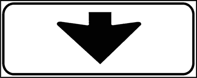
لوحة تخصيص الإشارة لمسار محدد
Applicabilità del segnale a una singola corsiaلوحة بسهم رأسي يشير مباشرة إلى مسار معين دون باقي مسارات نهر الطريق؛ تدل على أن الإشارة التي تعلوها تسري حصراً على مستخدمي هذا المسار فقط.
- • Il pannello integrativo in figura, posto in alto sulla carreggiata insieme ad un segnale indicante una località, segnala la corsia da prendere per raggiungere detta località
Il pannello integrativo in figura, posto in alto sulla carreggiata insieme ad un segnale indicante una località, segnala la corsia da prendere per raggiungere detta località - • Il pannello integrativo in figura, posto in alto sulla carreggiata insieme ad un segnale, specifica a quale corsia si riferisce il segnale
Il pannello integrativo in figura, posto in alto sulla carreggiata insieme ad un segnale, specifica a quale corsia si riferisce il segnale - • Il pannello integrativo in figura indica che il segnale posto sopra vale per la sola corsia indicata dalla freccia
Il pannello integrativo in figura indica che il segnale posto sopra vale per la sola corsia indicata dalla freccia
- • Il pannello integrativo in figura è posto per indicare la fermata degli autobus (خطأ FALSO)
- • Il pannello integrativo in figura indica che hanno la precedenza i veicoli che vengono di fronte (خطأ FALSO)
- • Il pannello integrativo in figura indica la fine di una prescrizione (خطأ FALSO)
- • Il pannello integrativo in figura indica la fine del segnale LIMITE MASSIMO DI VELOCITA' (خطأ FALSO)